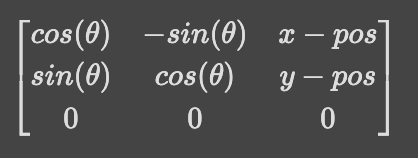

Overview of Lab 9
The purpose of this lab was to detect the surrounding space of the robot using the ToF distance sensor and generate a map using data collected from multiple locations. As a setup for this lab, a course was constructed in the engineering building at Cornell, and the robot was tasked with mapping the surrounding space.
Section 1: Gathering data
The selected method for capturing the data around the car was to use orientation control to move the robot by increments of 24º and measure the distance to any objects at each orientation. This was accomplished by using the orientation PID controller that integrates multiple sensors on the IMU through DMP. The front-mounted ToF sensor was used to gather 20 data points, corresponding to the distances to objects in front of the car. Averaging these data points provided a rough estimate of where the walls are. Although averaging the data improves the quality of the constructed map, it does have some limitations since the captured data does not actually follow a Gaussian distribution. Instead comparing the data to a more accurate distribution would lead to more accurate results.
Section 2: Processing data
The collected data –capturing the time of measurement, angle of the car, position of the car, and distance to objects– was gathered in a .csv file. The data was then post-processed by taking the average of the distance measurements at a given angle and plotted in a polar coordinate system. Then, the data from each measurement was multiplied by a rotation matrix to convert it from the robot reference frame to the global frame and plotted in cartesian coordinates. The rotation matrix combined a simple rotation and translation. To confirm that the plot was correct the cartesian plot and polar plot were compared.

Using DMP for rotational PID control greatly improved the accuracy of the measured angle compared to using the gyroscope in isolation. The maximum error of the DMP was found to be about 5 degrees. Since the DMP uses the magnetometer on the IMU, drift was negligible over the period that the robot was rotating. Most of the errors in the mapping came from distance sensors. As a baseline of robot accuracy, the maximum error of measurements was calculated for a 4x4 meter square room. With an error in the angle of 5 degrees and a ToF error of up to 0.5m, the maximum error was given as:
Meanwhile, the average error of any given point was 0, because the error was symmetrical around the true point, assuming a Gaussian distribution.
Section 3: Map Generation
Once all the data was gathered and processed, multiple readings were aggregated and a map was generated. For visibility, points gathered from different readings were color-coded. Finally, a collection of endpoints was used to draw any walls estimated by the sensors.